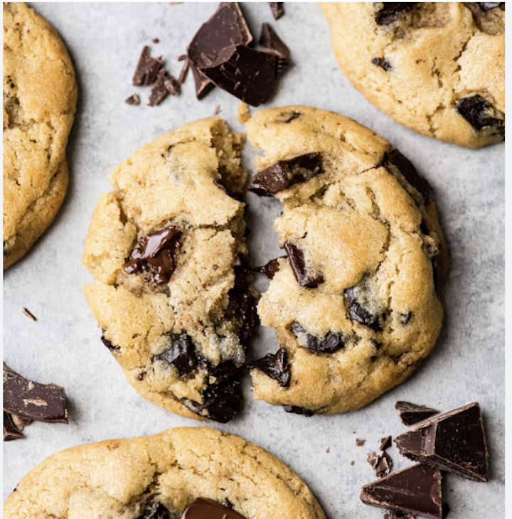

The first recipe is a true classic—and it couldn’t be easier to make! These chocolate chip cookies are everything you want in a homemade treat: soft in the center, slightly crisp around the edges, and packed with rich, melty chocolate in every single bite. From the moment you start mixing the ingredients, there’s something comforting about knowing you’re about to create a batch of cookies that never goes out of style. Whether you’re baking for friends, family, a special occasion, or just treating yourself after a long day, this simple recipe is guaranteed to turn out delicious every time. One of the best things about these cookies is how approachable they are. You don’t need any fancy equipment or complicated techniques—just a few basic ingredients, a bowl, and a love for something sweet. It’s the kind of recipe that’s perfect for beginners who are just getting into baking, but it’s also a go-to favorite for experienced bakers who want something quick, reliable, and satisfying. You can even make it your own by adding a personal twist, like extra chocolate chips, a sprinkle of sea salt on top, or even mixing in nuts for a little crunch. And then there’s the aroma—arguably the best part of the entire experience. As the cookies bake, your kitchen fills with that warm, buttery, chocolatey scent that instantly makes everything feel cozy and inviting. It’s the kind of smell that draws people in, has everyone asking “are those ready yet?”, and makes the wait feel almost impossible. When they finally come out of the oven, golden brown and perfectly soft, it’s hard not to sneak one right away. The first bite is pure comfort. The chocolate is still slightly gooey, the cookie is tender and warm, and every flavor comes together in that perfect balance of sweet and rich. Whether you enjoy them fresh out of the oven with a cold glass of milk or save a few for later (if they last that long!), these cookies never disappoint. So go ahead—give this recipe a try and enjoy the process just as much as the result. Baking these chocolate chip cookies isn’t just about making dessert; it’s about creating a moment, sharing something homemade, and indulging in a timeless treat that brings a little extra happiness to your day. Hope you love these chocolate chip cookies as much as I do! 🍪✨

| 2 Eggs | 1 cup of Butter | 1 teaspoon Baking powder | 2 teaspoons Vanilla extract | 1 cup of White sugar | 1 cup of Brown sugar | 3 cups of Flour | 2 cups of Chocolate chips |
|---|